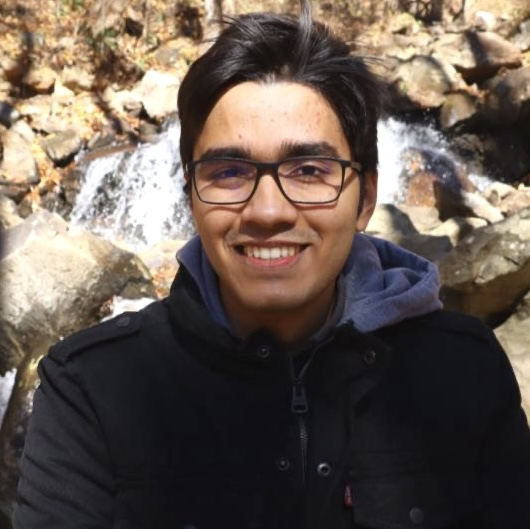

Krishna Acharya

PhD Student in Machine Learning
Dept. of Industrial & Systems Engineering
Georgia Institute of Technology
Office: CODA 12th Floor West
Email | Resume | Scholar
LinkedIn | GitHub
About Me
I am a third-year PhD student in Machine Learning at the Georgia Institute of Technology. I am fortunate to be advised by Prof. Juba Ziani.
Before joining Georgia Tech, I completed my Masters in Computer Science at École Normale Supérieure de Lyon and my Bachelors in Computer Science at the Birla Institute of Technology and Science
I enjoy working on problems which have provable guarantees and direct practical applications. Sequential Decision Making, Differential privacy, Fairness in ML are what I find particularly interesting.
Publications
Conferences
- Wealth Dynamics Over Generations: Analysis and Interventions
Krishna Acharya, Eshwar Ram Arunachaleswaran, Sampath Kannan, Aaron Roth, Juba Ziani
IEEE SaTML 2023
- Analysis of QoE for Adaptive Video Streaming over Wireless Networks with User Abandonment Behavior.
Rachid El-Azouzi, Krishna Acharya, Sudheer Poojary, Albert Sunny, Majed Haddad, Eitan Altman, Dimitrios Tsilimantos, Stefan Valentin
IEEE WCNC 2019
Manuscripts
- Oracle Efficient Algorithms for Groupwise Regret
Krishna Acharya, Eshwar Ram Arunachaleswaran, Sampath Kannan, Aaron Roth, Juba Ziani
Optimization for Machine Learning (OPT) workshop at NeurIPS 2023.
- Approximation of Banzhaf indices and its application to voting games
Krishna Acharya, Himadri Mukherjee, Jajati Keshari Sahoo
Theses
- Online Learning Algorithms for Fair Ad Auctions
Krishna Acharya
Master Thesis, École Normale Supérieure de Lyon
Internships
- Machine Learning Intern, Keysight Technologies (Summer 2023)
- Research Intern, Laboratoire d’informatique de Grenoble (Spring 2020)
- Research Intern, Nanyang Technological University (Spring 2019)
- Research Intern, Laboratoire informatique d’Avignon (Fall 2018)
Teaching
- ISyE 2027 : Probability with Applications (Spring 2022)
- ISyE 3133 : Engineering Optimization (Fall 2021)
Awards
- Kiplinger Fellowship (Fall 2021, Spring 2022)
- University of Lyon Scholarship of Excellence (Fall 2019, Spring 2020)
- Merit Scholar - BITS Pilani (2015, 2016)